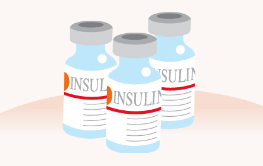

O que é a Insulina

A insulina é um hormônio produzido naturalmente pelo corpo que transforma a glicose, obtido pela alimentação, em energia. Quando essa produção está desregulada ou para de ocorrer, pode ser diabetes.
Insulina e o açúcar no sangue
A insulina é produzida pelo pâncreas e funciona como uma “chave”, abrindo a células do corpo para que a glicose, proveniente do açúcar, entre e seja usada para gerar energia. Assim, a insulina também controla os níveis de glicose no sangue, que em excesso pode ser prejudicial, e está envolvida no armazenamento de gordura.
A diabetes é caracterizada justamente pelos altos níveis de glicose no sangue. Pessoas diabéticas precisam tomar uma série de medidas para controlá-lo, como tomar injeções diárias de insulina artificial. Quando não controlada, a doença pode causar danos nos rins, nervos, visão, audição e no sistema cardiovascular. Ataques cardíacos, insuficiência renal e amputamento de membros são algumas das consequências mais graves e extremas.
No Brasil, 90% dos casos de diabetes é do tipo 2. A doença é autoimune, tem causas genéticas e ocorre quando o pâncreas pára de produzir insulina indefinitivamente. Dependendo da gravidade, a doença pode ser controlada com alimentação balanceada e exercícios físicos, mas o uso de insulina e medicamentos para controlar os níveis de glicose pode ser necessários. Já no caso da diabetes tipo 1, mais rara, as injeções diárias de insulina são necessárias sempre.
Insulina artificial
Existem diversos tipos de insulina, que variam de acordo com o tempo de ação no organismo. Para escolher a mais adequada, o médico irá analisar como o pâncreas da pessoa controla a glicose. A escolhida será aquela que tem ação mais parecida com a do órgão.
Os principais tipos de insulina :
Insulina de ação ultra-rápida
O efeito acontece poucos minutos após a aplicação. O pico ocorre 30 a 60 minutos depois e sua ação dura de três a cinco horas. Deve ser injetada imediatamente antes das refeições ou logo após, dependendo do tipo do medicamento.
Este tipo de insulina tem a aparência límpida e, como sua duração é mais curta, deixa a corrente sanguínea rapidamente, minimizando o risco de hipoglicemia (baixa concentração de glicose no sangue) nos períodos de jejum, entre as refeições.
Insulina de ação rápida
A ação tem início por volta de 30 minutos após a aplicação, enquanto o pico ocorre de duas a três horas depois. Sua duração é de três a seis horas. Deve ser injetada de 30 a 45 minutos após as refeições e, assim como a insulina de ação ultra-rápida, tem aparência límpida.
Insulina de ação intermediária
A insulina de ação intermediária leva de duas a quatro horas para começar a agir. O pico ocorre de quatro a 12 horas depois da aplicação e o tempo de duração é 12 a 18 horas. Geralmente, deve ser aplicada uma vez ao dia, antes de dormir. Tem aspecto turvo.
Insulina de ação lenta
O início da ação começa uma hora após a aplicação, mas o pico ocorre apenas de seis a 12 horas depois. Geralmente, a ação se prolonga o dia todo. Costuma ser aplicada uma vez ao dia, também antes de dormir, e tem aparência límpida.